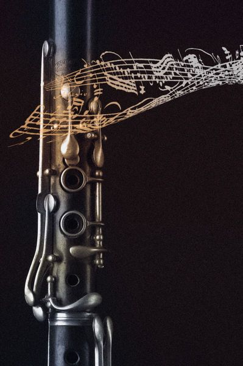

Welcome to HarmoniClari! This website is designed to help people who are interested in learning how to play the clarinet. Whether you're a complete novice or have some musical experience, you'll find valuable resources and lessons here to kick-start your clarinet journey.
What sets us apart is our commitment to inclusivity. We have a dedicated section for deaf individuals who want to learn how to play the clarinet. In this section, we utilize sound wave graphs to visually represent the music, making it accessible and enjoyable for everyone.
